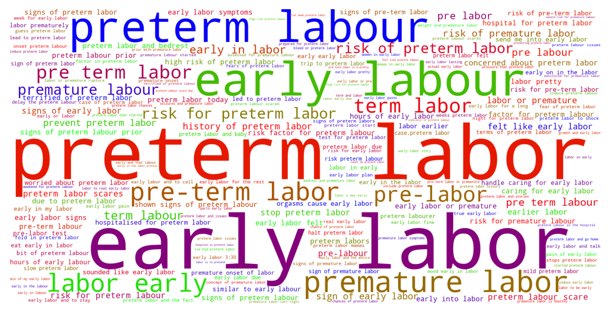

Jump to section:
Samples from Social CorpusHits per UMLS Alias on Social Corpus
Word Cloud Comparison
Embedding Space Comparison
Nearest Neighbors by Semantic Type
Related Analysed Concepts
Samples from Social Corpus
I'm googling ways to induce preterm labor and stories about mothers killing them selves .
Confidence: 0.681. Reddit link
I have a question for the moms who went to the hospital relatively early in labor , by which I mean they hadn't dilated very much when they got to the hospital .
Confidence: 0.606. Reddit link
Despite the midwife saying she thought I was probably still in early labour , we decided to go in and get checked .
Confidence: 0.783. Reddit link
I also called my midwives , my doula and my birth photographer to let them know I was in early labor .
Confidence: 1.000. Reddit link
I spent most of early labor bouncing on a birthing ball at the suggestion of my AMAZING nurse .
Confidence: 0.742. Reddit link
I could have an experimental prenatal surgery where they insert a balloon into the baby's trachea to force the lungs to grow and then later remove it after a few weeks , but I would have to live close to the hospital for those weeks in case I went into preterm labor .
Confidence: 1.000. Reddit link
I asked my midwife about it about a month ago , she sent me in for a blood test , numbers came back normal and we moved on to worry about preterm labor .
Confidence: 0.736. Reddit link
I'm sort of freaked out about the idea of SIL and BIL being here when I'm in early labour .
Confidence: 0.783. Reddit link
A scholarly article I found indicates a 3 fold increase in risk of placental abruption 2 fold in preterm labor and generally stated there's a pretty definite link between previous pregnancy loss and synechiae .
Confidence: 0.658. Reddit link
In preterm labor at 32 weeks - I am scared and worried about baby Hey everyone , I'm currently in the hospital in preterm labor .
Confidence: 0.769. Reddit link
Hits per UMLS Alias on Social Corpus
-
early labor
551 hits
-
preterm labor
457 hits
-
preterm labour
106 hits
-
premature labor
104 hits
-
premature labour
25 hits
-
labor preterm
17 hits
-
labor premature
16 hits
-
labour preterm
13 hits
-
labors preterm
9 hits
-
premature onset labor
4 hits
-
labour premature
2 hits
-
premature obstetric labor
0 hits
-
obstetric labor premature
0 hits
-
premature onset labour
0 hits
-
labor premature obstetric
0 hits
-
premature parturition
0 hits
-
premature labor finding
0 hits
Word Cloud Comparison
Keywords matching C0022876
Keywords matched against concept. Word size represents frequency.
Keywords co-occurring with C0022876
Co-occurrence is measured at the document-level (i.e. Reddit submissions). Frequencies are normalized to account for keywords common to all CUIs.
Embedding Space Comparison
T-SNE comparison for word embeddings learned from medical domain (EuroPMC) and social media (Reddit) independently.
Pearson correlation for union of closest 1000 neighbors: 0.370
Nearest Neighbors by Semantic Type
Most similar concepts in each of the selected UMLS semantic types. Based on concept embeddings from social corpus.
T046 (Pathologic Function)
-
C0022876
Early labor
1.000 Similarity
-
C0151526
Pre term
0.917 Similarity
-
C0085598
False labor
0.848 Similarity
-
C0152154
Labor long
0.838 Similarity
-
C0729264
Preterm premature rupture membrane
0.836 Similarity
-
C0015944
Pregnancy prom
0.799 Similarity
-
C0269810
Sepsis during labor
0.775 Similarity
-
C0473390
Threatened preterm labor
0.755 Similarity
T047 (Disease or Syndrome)
-
C0231341
Aging premature
0.818 Similarity
-
C0473498
Ruptured uterus before labor
0.772 Similarity
-
C0033036
Atrial premature contractions
0.744 Similarity
-
C0340464
Extrasystoles
0.707 Similarity
-
C0745617
Fast labor
0.691 Similarity
-
C0025322
Early menopause
0.662 Similarity
-
C0948664
Imminent abortion
0.620 Similarity
-
C0597854
Renin induced hypertension
0.611 Similarity
T060 (Diagnostic Procedure)
-
C0040862
Labor trial
0.800 Similarity
-
C1578855
Monitoring labor
0.663 Similarity
-
C0200068
Contractions stress test
0.585 Similarity
-
C0200048
Vaginal exam
0.577 Similarity
-
C0206521
Interventional ultrasound
0.572 Similarity
-
C0033053
Prenatal diagnoses
0.571 Similarity
-
C0199637
Heart rate monitoring
0.534 Similarity
-
C0015945
Fetal monitoring
0.531 Similarity
T079 (Temporal Concept)
-
C2964377
Preterm time
0.791 Similarity
-
C0022871
Labor first stage
0.756 Similarity
-
C0022872
Second stage labour
0.726 Similarity
-
C0016145
First born child
0.642 Similarity
-
C0443252
Long term
0.623 Similarity
-
C2826645
Birth day
0.617 Similarity
-
C2985337
Relaxation time between uterine contractions
0.586 Similarity
-
C0421451
Birthdate
0.585 Similarity
T184 (Sign or Symptom)
-
C2735340
Preterm labor symptoms
0.788 Similarity
-
C0565619
Fetal distress labor
0.761 Similarity
-
C1301639
Pain during labor delivery
0.759 Similarity
-
C0474368
Laboring pain
0.755 Similarity
-
C3494358
Prodromal sign
0.734 Similarity
-
C3494359
Prodromal state
0.714 Similarity
-
C3494360
Period prodromal
0.682 Similarity
-
C2985326
Signs impending birth
0.656 Similarity
T201 (Clinical Attribute)
-
C0566679
Length labor
0.758 Similarity
-
C1301668
Delivery time
0.662 Similarity
-
C1286282
Birth outcomes
0.611 Similarity
-
C1285995
Measure uterine contractions
0.599 Similarity
-
C1286046
Labor pattern
0.589 Similarity
-
C0233131
Intensity uterine contraction
0.581 Similarity
-
C1286049
Aspect delivery
0.549 Similarity
-
C0552443
Effacement
0.544 Similarity
T100 (Age Group)
-
C4048294
Preterm baby
0.747 Similarity
-
C3494262
Extremely preterm infant
0.711 Similarity
-
C4551581
Full term baby
0.600 Similarity
-
C0021289
Newborn
0.463 Similarity
-
C3825962
Middle aged women
0.413 Similarity
-
C0682054
Mature adult
0.399 Similarity
-
C0021270
Baby
0.365 Similarity
-
C0680085
Early adulthood
0.357 Similarity
T061 (Therapeutic or Preventive Procedure)
-
C0259787
Induction labor
0.729 Similarity
-
C0269704
Spontaneous vaginal breech birth
0.728 Similarity
-
C0200066
Medical induction labor
0.711 Similarity
-
C0269694
Normal birth
0.694 Similarity
-
C0404325
Induction delivery procedures
0.660 Similarity
-
C0011209
Delivery
0.654 Similarity
-
C0404381
Delivery placenta
0.639 Similarity
-
C0559916
Water birth delivery
0.637 Similarity
T032 (Organism Attribute)
-
C0805393
Breathing spontaneous
0.662 Similarity
-
C4086849
Sex at birth
0.579 Similarity
-
C0017504
Gestational age
0.555 Similarity
-
C0005612
Weight baby
0.548 Similarity
-
C1954788
Gestational age weeks
0.519 Similarity
-
C0751992
Fetal weight
0.463 Similarity
-
C0001779
Age
0.438 Similarity
-
C0026578
Mosaicism
0.429 Similarity
T037 (Injury or Poisoning)
-
C3203359
Ruptures
0.657 Similarity
-
C0269858
Traumatic lesion during delivery
0.653 Similarity
-
C0005604
Traumatic birth
0.651 Similarity
-
C0730592
Vulval tear during delivery
0.614 Similarity
-
C0417108
Jump from burning hospital
0.589 Similarity
-
C1959898
Traumatic injury during pregnancy
0.579 Similarity
-
C0007851
Cervical tear
0.564 Similarity
-
C0405244
Tearing vaginal
0.539 Similarity
T042 (Organ or Tissue Function)
-
C2753527
Heart induction
0.634 Similarity
-
C1325917
Organ induction
0.629 Similarity
-
C4250378
Neural induction
0.622 Similarity
-
C0079103
Cervical dilation
0.598 Similarity
-
C0042130
Uterine contractions
0.594 Similarity
-
C0032058
Placentation
0.567 Similarity
-
C0027045
Heart beating
0.559 Similarity
-
C0522026
Lengthening contraction
0.555 Similarity
T048 (Mental or Behavioral Dysfunction)
-
C0522187
Fear childbirth
0.612 Similarity
-
C0338927
Hospitalism
0.566 Similarity
-
C0038436
Ptsd
0.559 Similarity
-
C0232600
Making self sick
0.546 Similarity
-
C0038441
Stress disorder
0.490 Similarity
-
C0563172
Dangerous plans
0.489 Similarity
-
C0003537
Losing words
0.480 Similarity
-
C0233702
Fear pain
0.479 Similarity
T059 (Laboratory Procedure)
-
C1295143
Fetal fibronectin test
0.593 Similarity
-
C0005729
Bleeding time
0.521 Similarity
-
C0200896
Cytogenetic studies
0.504 Similarity
-
C0026040
Sectionings thin
0.492 Similarity
-
C0368930
Clotting time
0.490 Similarity
-
C0851081
Progesterone test
0.470 Similarity
-
C0850355
Pregnancy blood test
0.465 Similarity
-
C0023901
Liver tests
0.458 Similarity
T023 (Body Part, Organ, or Organ Component)
-
C0007874
Cervix
0.586 Similarity
-
C1267666
Cervix part
0.583 Similarity
-
C0042149
Uterus
0.564 Similarity
-
C1268155
Placenta part
0.559 Similarity
-
C0227828
Cervix wall
0.555 Similarity
-
C0226958
Posterior tongue
0.532 Similarity
-
C0501817
First cervical nerve
0.530 Similarity
-
C1268107
Lung part
0.527 Similarity
T019 (Congenital Abnormality)
-
C0266393
Uterus didelphys
0.583 Similarity
-
C0000768
Birth defect
0.544 Similarity
-
C0266387
Bicornuate uterus
0.536 Similarity
-
C0266383
Abnormality uterus
0.536 Similarity
-
C0432185
Absent muscles since birth
0.528 Similarity
-
C0266389
Unicornuate uterus
0.516 Similarity
-
C0018798
Heart defect
0.513 Similarity
-
C0152240
Septate uterus
0.501 Similarity
T101 (Patient or Disabled Group)
-
C0233363
Monoamniotic twins
0.581 Similarity
-
C0008098
Child hospitalized
0.544 Similarity
-
C0871503
Dying patients
0.540 Similarity
-
C0021562
Inpatient
0.511 Similarity
-
C1516213
Cancer patient
0.487 Similarity
-
C0029921
Outpatient
0.429 Similarity
-
C0683995
Drug exposed child
0.428 Similarity
-
C1516231
Cancer survivor
0.428 Similarity
T067 (Phenomenon or Process)
-
C0023983
Long term effects
0.576 Similarity
-
C0677038
Increase pressure
0.500 Similarity
-
C0337240
Fall while being carried
0.483 Similarity
-
C2986841
Binding potential
0.451 Similarity
-
C0023670
Events life change
0.440 Similarity
-
C0013956
Emergency
0.430 Similarity
-
C0302131
Ejection
0.418 Similarity
-
C0563547
Pressure change
0.417 Similarity
T031 (Body Substance)
-
C0392908
Secretion vaginal
0.572 Similarity
-
C3532405
Swab from placenta
0.522 Similarity
-
C0238626
Amniotic meconium
0.502 Similarity
-
C0439057
Early morning urine
0.488 Similarity
-
C0007806
Spinal fluid
0.484 Similarity
-
C3496630
Swab from uterus
0.480 Similarity
-
C0002638
Amniotic fluid
0.466 Similarity
-
C1446336
Multiple plaques
0.457 Similarity
T049 (Cell or Molecular Dysfunction)
-
C4725191
Stop lost
0.567 Similarity
-
C0544885
Stop gain
0.470 Similarity
-
C1705285
Mutated
0.435 Similarity
-
C0002938
Aneuploidy
0.430 Similarity
-
C0008625
Chromosomal abnormality
0.409 Similarity
-
C0041107
Trisomy
0.402 Similarity
-
C0008628
Del
0.390 Similarity
-
C0040715
Translocation
0.345 Similarity
T005 (Virus)
-
C3743464
Mycobacteriophage whirlwind
0.549 Similarity
-
C1220459
Hart park group
0.500 Similarity
-
C5058350
Fairfax lookout virus
0.468 Similarity
-
C4415400
Phage wrath
0.435 Similarity
-
C0205939
Cold virus common
0.433 Similarity
-
C3768023
Mycobacteriophage conspiracy
0.423 Similarity
-
C0086776
Parvovirus
0.414 Similarity
-
C4433204
King virus
0.413 Similarity
T190 (Anatomical Abnormality)
-
C0269852
Previa vasa
0.547 Similarity
-
C0009918
Contraction joint
0.530 Similarity
-
C4025734
Anomaly scalp
0.507 Similarity
-
C4732742
Hole center heart
0.498 Similarity
-
C3887590
Stricture ureter
0.491 Similarity
-
C0269185
Tipped uterus
0.465 Similarity
-
C0266785
Umbilical cord issue
0.463 Similarity
-
C0332447
Anomaly
0.428 Similarity
T034 (Laboratory or Test Result)
-
C0588465
Sperm forward progression
0.539 Similarity
-
C0240802
Positive pregnancy test
0.505 Similarity
-
C0427777
Pregnancy results tests
0.482 Similarity
-
C5206315
Nse positive
0.480 Similarity
-
C3898879
Triple positive
0.477 Similarity
-
C5201036
Low platelets
0.476 Similarity
-
C2266672
Clotting time finding
0.469 Similarity
-
C0427780
Negative pregnancy test
0.463 Similarity
T200 (Clinical Drug)
-
C3216620
Progesterone vaginal product
0.539 Similarity
-
C3218395
Papain pill
0.514 Similarity
-
C0307304
Pitocin injection
0.500 Similarity
-
C1247002
Misoprostol oral tablet
0.489 Similarity
-
C5222490
Progesterone injection
0.471 Similarity
-
C1247687
Progesterone suppositories vaginal
0.469 Similarity
-
C4048176
Oxytocin injection
0.469 Similarity
-
C1163679
Injections sterile water
0.422 Similarity
T074 (Medical Device)
-
C3878737
Uternine contraction monitor internal
0.533 Similarity
-
C0043305
Intensifying screen xray
0.519 Similarity
-
C0180647
Internal fetal heart rate monitoring
0.489 Similarity
-
C0016533
Forceps
0.477 Similarity
-
C0013962
Emergency medical tag
0.472 Similarity
-
C0179850
Birthing chair
0.461 Similarity
-
C0593622
Home pregnancy test
0.457 Similarity
-
C0462567
Ring suppository
0.451 Similarity
T039 (Physiologic Function)
-
C0599423
Joint stress
0.528 Similarity
-
C0026820
Muscle contraction
0.502 Similarity
-
C0743925
Fetal growth
0.490 Similarity
-
C0025320
Change
0.458 Similarity
-
C0442695
Bearing down
0.450 Similarity
-
C2256369
Heart process
0.447 Similarity
-
C0035203
Ventilation
0.441 Similarity
-
C0149784
Reaction stress
0.427 Similarity
T018 (Embryonic Structure)
-
C0032043
Placenta
0.524 Similarity
-
C0553522
Cord placenta umbilical
0.511 Similarity
-
C0002630
Amniotic
0.508 Similarity
-
C1278988
Entire placenta
0.500 Similarity
-
C0553498
Gestational sac
0.496 Similarity
-
C0015935
Fetal heart
0.493 Similarity
-
C0440731
Fetal brain
0.483 Similarity
-
C0008508
Chorionic villi
0.457 Similarity
T041 (Mental Process)
-
C0596475
Early experience
0.499 Similarity
-
C0015726
Scared
0.478 Similarity
-
C4280069
Positive thinking
0.473 Similarity
-
C0150035
Anticipatory grief
0.470 Similarity
-
C0282124
Near death experience
0.468 Similarity
-
C0424134
Negative thinking
0.458 Similarity
-
C1999057
Assimilation
0.451 Similarity
-
C0025265
Short term memory
0.448 Similarity
T054 (Social Behavior)
-
C0582101
Talking about dying
0.488 Similarity
-
C0237581
Animal division labor
0.471 Similarity
-
C0028658
Nurse patient
0.470 Similarity
-
C0815201
Couple relations
0.470 Similarity
-
C0422386
Patient suing doctor finding
0.448 Similarity
-
C0019421
Straight
0.440 Similarity
-
C1319178
Coping family
0.435 Similarity
-
C0679997
Premarital sex
0.428 Similarity
T007 (Bacterium)
-
C0018154
Gram positive bacteria
0.453 Similarity
-
C0995648
Genus quinella
0.421 Similarity
-
C0579233
Group b strep
0.404 Similarity
-
C0995705
Frankia
0.395 Similarity
-
C4169658
Convivina
0.358 Similarity
-
C0022828
L forms
0.339 Similarity
-
C4277510
Expec
0.336 Similarity
-
C1016530
Hallella
0.334 Similarity
T044 (Molecular Function)
-
C0887940
Gene arrangements
0.451 Similarity
-
C1149528
Wishful thinking binding
0.443 Similarity
-
C1152025
Docs
0.435 Similarity
-
C1721104
Breaks dna
0.432 Similarity
-
C2247516
Sgah
0.413 Similarity
-
C1149397
Heartless ligand
0.397 Similarity
-
C0369768
Oxygen saturation
0.363 Similarity
-
C1749457
Ligands activity
0.360 Similarity
T195 (Antibiotic)
-
C0003232
Antibiotics
0.449 Similarity
-
C0723285
Septa
0.407 Similarity
-
C0718575
Antibiotics ear
0.391 Similarity
-
C0030842
Penicillin
0.356 Similarity
-
C0002645
Amoxicillin
0.333 Similarity
-
C0718950
Biomox
0.321 Similarity
-
C0310367
Today
0.283 Similarity
-
C0013090
Doxycycline
0.279 Similarity